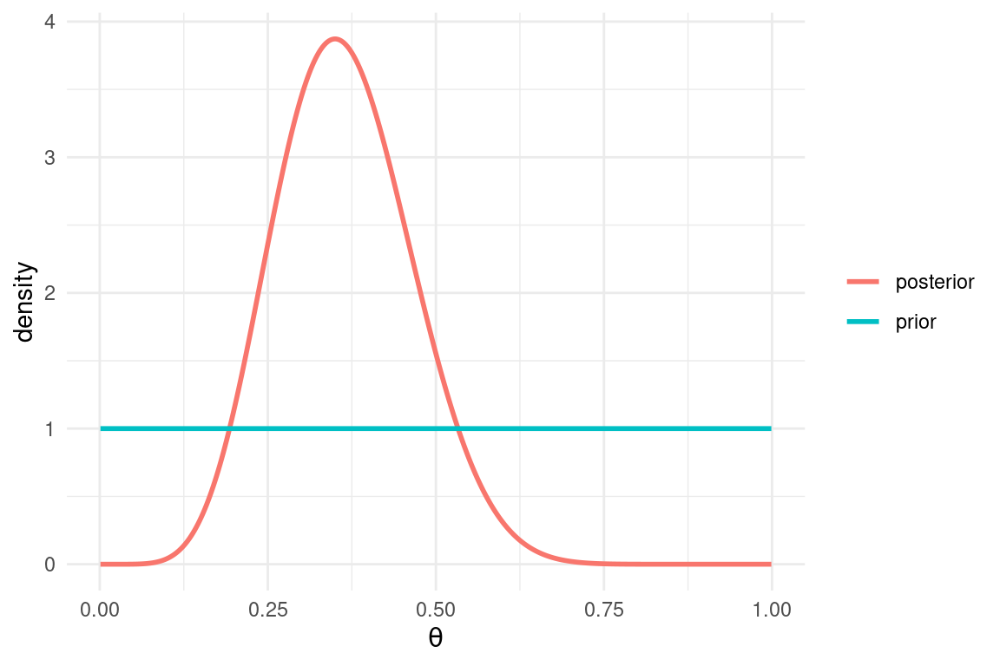
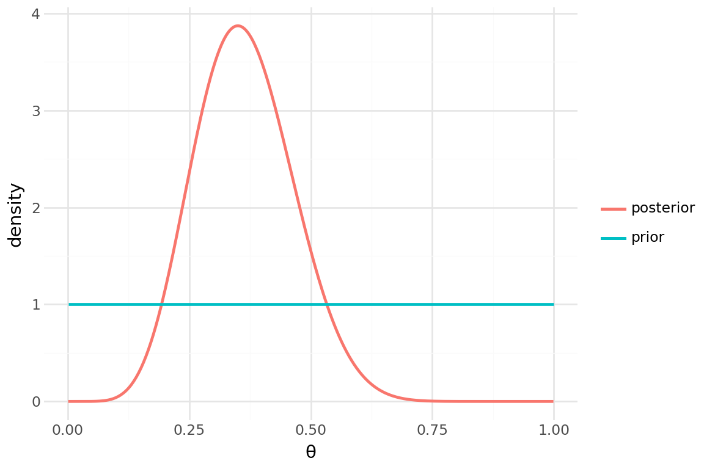

x <- rnorm(50)
summary(x) # a five-number summary (plus the mean) Min. 1st Qu. Median Mean 3rd Qu. Max.
-1.8448 -0.7552 -0.2235 -0.1581 0.5394 1.6596 This chapter is optional self-study material: there is no timetabled slot for it, no lab, and nothing here is examinable. It exists because at some point — probably while reading someone else’s package code — you will run into setClass, @, and setMethod in R, or class, self and __init__ in Python, and you deserve to know what is going on. It is also, quietly, one of the most elegant corners of R.
Throughout the module we treated functions as the star of the show (Chapter 3). Here we flip the perspective: instead of making functions smarter, we make the data smarter, by attaching a class to it and letting the language pick the right behaviour automatically.
One warning about the shape of this chapter. Everywhere else in these notes the two languages run side by side, line for line. Object-oriented programming is where they genuinely part ways — R attaches behaviour to generic functions outside the object, Python attaches it to methods inside the class — so a two-column view would be a lie. Instead the chapter comes in two parts: Section 6.2 builds everything in R (S3, S4 and multiple dispatch), and Section 6.3 rebuilds the same machinery in Python. Read the part for your own language first; then skim the other — the contrast is the real lesson.
You have been using this machinery all term without noticing. Consider summary():
x <- rnorm(50)
summary(x) # a five-number summary (plus the mean) Min. 1st Qu. Median Mean 3rd Qu. Max.
-1.8448 -0.7552 -0.2235 -0.1581 0.5394 1.6596 fit <- lm(mpg ~ wt, data = mtcars) # the mpg-vs-weight line from week 4
summary(fit) # a full regression table!
Call:
lm(formula = mpg ~ wt, data = mtcars)
Residuals:
Min 1Q Median 3Q Max
-4.5432 -2.3647 -0.1252 1.4096 6.8727
Coefficients:
Estimate Std. Error t value Pr(>|t|)
(Intercept) 37.2851 1.8776 19.858 < 2e-16 ***
wt -5.3445 0.5591 -9.559 1.29e-10 ***
---
Signif. codes: 0 '***' 0.001 '**' 0.01 '*' 0.05 '.' 0.1 ' ' 1
Residual standard error: 3.046 on 30 degrees of freedom
Multiple R-squared: 0.7528, Adjusted R-squared: 0.7446
F-statistic: 91.38 on 1 and 30 DF, p-value: 1.294e-10Same function name, wildly different output. How does summary() know what to do? It asks the object what it is:
class(x)[1] "numeric"class(fit)[1] "lm"summary() is a generic function: it does almost no work itself. It inspects the class of its argument and dispatches to a specialised method — summary.default() for the numeric vector, summary.lm() for the regression. There are many such methods lying around:
head(methods("summary"), 8)[1] "summary,ANY-method" "summary,diagonalMatrix-method"
[3] "summary,sparseMatrix-method" "summary.aov"
[5] "summary.aovlist" "summary.aspell"
[7] "summary.check_packages_in_dir" "summary.connection" length(methods("summary"))[1] 46print() and plot() work exactly the same way — that is why typing fit at the console shows a tidy coefficient display rather than the giant list that fit actually is. Contrast this with optim() from Chapter 5, which returns a plain unclassed list and wishes you luck.
Note for Python users: the same phenomenon exists in your language — len() happily measures strings, lists and arrays, and + adds numbers but concatenates strings — but the mechanism is different: each type carries its own __len__ or __add__ method inside it. Section 6.3 makes this precise.
This design is called object-oriented programming (OOP). R has several OOP systems; the R part of this chapter meets the two that matter — S3 and S4 — and finishes with S4’s party trick: dispatching on two arguments at once. Python has exactly one system, and we will use it to rebuild the very same example.
Everything in this part is base R. The one sentence to hold on to, especially if Python is your language: in R, methods belong to generic functions, not to objects — you will write summary(flips), never flips.summary().
S3 is R’s oldest and simplest object system, and it powers most of what you have used so far (lm, data.frame, factor…). The entire mechanism is two ingredients: a class attribute on the object, and a naming convention (generic.class) for the methods.
Any object can be given a class — it is just a label:
set.seed(7432) # so we all flip the same coins
flips <- list(
coin = "fair",
prob = 0.5,
outcomes = sample(c("H", "T"), 20, replace = TRUE)
)
class(flips) <- "coin_flips"
class(flips)[1] "coin_flips"In practice we wrap this in a constructor function — just an ordinary function in the sense of Chapter 3 — so that all coin_flips objects are built the same way:
coin_flips <- function(n, prob = 0.5, coin = "fair") {
outcomes <- sample(c("H", "T"), n, replace = TRUE, prob = c(prob, 1 - prob))
# structure() builds the object and attaches the class in one go
structure(list(coin = coin, prob = prob, outcomes = outcomes),
class = "coin_flips")
}
flips <- coin_flips(20)If we print flips right now we get the raw list — R has no better idea. Let’s fix that.
To give our class its own printing behaviour, we simply define a function with the magic name print.coin_flips. That naming convention is the registration:
print.coin_flips <- function(x, ...) {
cat("A", x$coin, "coin, flipped", length(x$outcomes), "times:\n")
cat(paste(x$outcomes, collapse = ""), "\n")
invisible(x) # print methods return their input invisibly, by convention
}
flipsA fair coin, flipped 20 times:
HTHHHTTHTTHHTTTHTHTH The invisible(x) follows the convention from Chapter 3: the method’s real job is the side effect (the cat()), so the return value should not print a second time.
A summary method works the same way (the first argument of summary is called object, so we match that):
summary.coin_flips <- function(object, ...) {
n <- length(object$outcomes)
heads <- sum(object$outcomes == "H")
phat <- heads / n
se <- sqrt(phat * (1 - phat) / n)
cat("Flips:", n, " Heads:", heads, sprintf("(%.0f%%)\n", 100 * phat))
cat(sprintf("Approx. 95%% CI for P(H): [%.3f, %.3f]\n",
max(0, phat - 1.96 * se), min(1, phat + 1.96 * se)))
invisible(object)
}
summary(flips)Flips: 20 Heads: 10 (50%)
Approx. 95% CI for P(H): [0.281, 0.719]The generics themselves are one-liners: they call UseMethod(), which looks at the class of the first argument and forwards the call to generic.thatclass, falling back to generic.default if nothing more specific exists. Let’s invent a generic se() for standard errors:
se <- function(x, ...) UseMethod("se")
# fallback: standard error of the mean of a plain numeric vector
se.default <- function(x, ...) sd(x) / sqrt(length(x))
# standard errors of regression coefficients
se.lm <- function(x, ...) sqrt(diag(vcov(x)))
# standard error of the estimated P(H)
se.coin_flips <- function(x, ...) {
phat <- mean(x$outcomes == "H")
sqrt(phat * (1 - phat) / length(x$outcomes))
}One name, three behaviours:
se(rnorm(100))[1] 0.0935996se(fit)(Intercept) wt
1.877627 0.559101 se(flips)[1] 0.1118034The class attribute can be a vector, ordered from most to least specific. R tries methods in that order. You have already met this in the wild:
logit_fit <- glm(am ~ mpg, data = mtcars, family = binomial)
class(logit_fit)[1] "glm" "lm" A glm is a lm with extras: any generic without a glm method falls through to the lm one. We can do the same — a biased coin is still a coin:
biased_flips <- function(n, prob) {
out <- coin_flips(n, prob = prob, coin = "dodgy")
class(out) <- c("biased_flips", class(out)) # new class FIRST, old one kept
out
}
print.biased_flips <- function(x, ...) {
cat("(!) This coin is loaded: P(H) =", x$prob, "\n")
NextMethod() # now run the next method in line: print.coin_flips
}
b <- biased_flips(20, prob = 0.9)
b(!) This coin is loaded: P(H) = 0.9
A dodgy coin, flipped 20 times:
HHHHHHHHHHHHHHTTHHHH NextMethod() hands the call down the class vector, so the specialised method only adds its extra bit and delegates the rest. And since we never wrote summary.biased_flips, summary(b) falls through to summary.coin_flips automatically:
inherits(b, "coin_flips") # is-a check[1] TRUEsummary(b)Flips: 20 Heads: 18 (90%)
Approx. 95% CI for P(H): [0.769, 1.000]That is S3 in full: a class attribute, UseMethod, a naming convention, and NextMethod. No wonder most of CRAN runs on it.
You are given this object:
ci <- structure(
list(estimate = 5.3, lower = 4.1, upper = 6.5, level = 0.95),
class = "conf_int"
)print.conf_int method so that typing ci displays something like 95% CI: 5.30 [4.10, 6.50] (use sprintf() for the formatting, and follow the invisible-return convention).print(unclass(ci)) still shows the raw list — the data never changed, only the label R uses to choose a method.se.conf_int method for the se() generic above: assuming the interval is \text{estimate} \pm 1.96 \times \text{se}, recover the standard error as (upper − lower) / (2 × 1.96).S3 is charmingly informal. Nothing guarantees a coin_flips object actually contains outcomes; worse, nothing stops us from simply lying:
y <- 1:10
class(y) <- "lm" # "trust me, I'm a regression"
summary(y)Error in z$rank: $ operator is invalid for atomic vectorsR believed us, dispatched to summary.lm, and chaos ensued. S4 (from the methods package) fixes this with formal class definitions: declared slots with declared types, optional validity checks, and formally registered generics and methods.
library(methods) # attached by default in normal sessions, but let's be explicit
setClass("Normal",
slots = c(mean = "numeric", sd = "numeric"),
prototype = prototype(mean = 0, sd = 1) # default slot values
)Objects are built with new(), and slots accessed with @ (the S4 cousin of $):
z <- new("Normal", mean = 1, sd = 2)
z@mean[1] 1new("Normal") # prototype fills in the defaults: a standard normalAn object of class "Normal"
Slot "mean":
[1] 0
Slot "sd":
[1] 1Unlike S3, the contract is enforced — a slot must exist and have the declared type:
new("Normal", mean = "large")Error in validObject(.Object): invalid class "Normal" object: invalid object for slot "mean" in class "Normal": got class "character", should be or extend class "numeric"Types are not enough: sd = -3 is a perfectly good numeric and a terrible standard deviation. A validity function encodes the statistical constraints; it returns TRUE if all is well, or a string describing the problem:
setClass("Normal",
slots = c(mean = "numeric", sd = "numeric"),
prototype = prototype(mean = 0, sd = 1),
validity = function(object) {
if (length(object@mean) != 1 || length(object@sd) != 1)
return("mean and sd must be single numbers")
if (object@sd <= 0)
return("sd must be strictly positive")
TRUE
}
)(You can also bolt a check onto an existing class later with setValidity().) Now new() polices the door:
new("Normal", sd = -3)Error in validObject(.Object): invalid class "Normal" object: sd must be strictly positiveOne caveat: direct slot assignment does not re-run the validity function, so a valid object can be corrupted after construction. validObject() performs the inspection on demand:
z <- new("Normal", mean = 1, sd = 2)
z@sd <- -3 # sneaks through...validObject(z) # ...but does not survive an auditError in validObject(z): invalid class "Normal" object: sd must be strictly positiveIn S4, generics are declared with setGeneric() and methods registered with setMethod() — no naming conventions, everything explicit. Let’s make a generic that evaluates a distribution’s density at some points:
setGeneric("dens", function(d, x) standardGeneric("dens"))[1] "dens"setMethod("dens", "Normal", function(d, x) dnorm(x, mean = d@mean, sd = d@sd))
z <- new("Normal", mean = 1, sd = 2)
dens(z, 0:3)[1] 0.1760327 0.1994711 0.1760327 0.1209854The S4 analogue of the print method is show() — it controls what typing the object’s name displays:
setMethod("show", "Normal", function(object) {
cat("Normal(mean = ", object@mean, ", sd = ", object@sd, ")\n", sep = "")
})
zNormal(mean = 1, sd = 2)S4 inheritance is declared with contains: the subclass gets all the slots, the validity check, and every method of its parent, plus whatever it adds:
setClass("NamedNormal",
contains = "Normal",
slots = c(name = "character")
)
mu_prior <- new("NamedNormal", name = "prior for mu", mean = 0, sd = 10)
mu_prior@name[1] "prior for mu"dens(mu_prior, 0) # inherited method: a NamedNormal is a Normal[1] 0.03989423is(mu_prior, "Normal")[1] TRUETry new("NamedNormal", name = "oops", sd = -1) — the parent’s validity function fires too. This is exactly how large systems like the Matrix package build families of matrix classes (sparse, triangular, symmetric…) that all share the linear algebra you met in Chapter 1.
Define an S4 class Uniform with numeric slots min and max, a prototype giving the standard uniform on [0, 1], and a validity function requiring both slots to be single numbers with min < max. Then:
show method displaying something like Uniform[0, 1];dens method for the generic above (use dunif());new("Uniform", min = 2, max = 1) is rejected, and that dens(new("Uniform"), c(0.5, 2)) returns 1 0.Here is where S4 earns its keep. UseMethod in S3 looks at the class of the first argument only. That is fine for summary(fit), but plenty of statistical operations depend on the classes of two things at once.
The cleanest example is conjugate Bayesian updating. The posterior p(\theta \mid \mathbf{x}) \propto p(\mathbf{x} \mid \theta)\, p(\theta) has a closed form only for matching pairs: a Beta prior with binomial data gives a Beta posterior, a Gamma prior with Poisson data gives a Gamma posterior, and so on. The right computation depends on both the prior’s class and the data’s class — a job for S4, which dispatches on the full signature.
First, the cast. We already have Normal; let’s add two more priors and some data classes, each data class carrying its model assumption in its name:
# priors
setClass("Beta", slots = c(a = "numeric", b = "numeric"))
setClass("Gamma", slots = c(shape = "numeric", rate = "numeric"))
# data
setClass("BinomData", slots = c(successes = "numeric", trials = "numeric"))
setClass("PoisData", slots = c(x = "numeric"))
setClass("NormData", slots = c(x = "numeric", sd = "numeric")) # known noise sdA quick cosmetic show for Beta (we leave the others to S4’s serviceable default):
setMethod("show", "Beta", function(object) {
cat("Beta(", object@a, ", ", object@b, ")\n", sep = "")
})Now the generic, with two dispatch arguments, and one method per conjugate pair. The signature() names the class of each argument in turn:
setGeneric("posterior", function(prior, data) standardGeneric("posterior"))[1] "posterior"# Beta(a, b) + k successes in n trials -> Beta(a + k, b + n - k)
setMethod("posterior", signature("Beta", "BinomData"), function(prior, data) {
new("Beta",
a = prior@a + data@successes,
b = prior@b + data@trials - data@successes)
})
# Gamma(shape, rate) + Poisson counts -> Gamma(shape + sum(x), rate + n)
setMethod("posterior", signature("Gamma", "PoisData"), function(prior, data) {
new("Gamma",
shape = prior@shape + sum(data@x),
rate = prior@rate + length(data@x))
})
# Normal prior + normal data with known sd -> Normal (precision-weighted average)
setMethod("posterior", signature("Normal", "NormData"), function(prior, data) {
prec_prior <- 1 / prior@sd^2
prec_data <- length(data@x) / data@sd^2
post_var <- 1 / (prec_prior + prec_data)
post_mean <- post_var * (prec_prior * prior@mean + prec_data * mean(data@x))
new("Normal", mean = post_mean, sd = sqrt(post_var))
})Let’s take it for a spin. A flat Beta prior, 7 successes in 20 trials:
prior <- new("Beta", a = 1, b = 1)
d1 <- new("BinomData", successes = 7, trials = 20)
posterior(prior, d1)Beta(8, 14)The posterior is itself a Beta, so it can serve as the prior for the next batch of data — sequential updating comes for free, and matches pooling everything at once:
d2 <- new("BinomData", successes = 5, trials = 10)
posterior(posterior(prior, d1), d2)Beta(13, 19)posterior(prior, new("BinomData", successes = 12, trials = 30))Beta(13, 19)The Normal-Normal pair reuses the Normal class from earlier — pretty show, validity check and all:
set.seed(7432)
obs <- rnorm(25, mean = 3, sd = 2)
posterior(new("Normal", mean = 0, sd = 10),
new("NormData", x = obs, sd = 2))Normal(mean = 3.003806, sd = 0.3996804)Conceptually, S4 keeps a table of methods indexed by the signature — here, (prior class, data class) — and each call looks up the most specific matching entry:
BinomData |
PoisData |
NormData |
|
|---|---|---|---|
Beta |
Beta update | — | — |
Gamma |
— | Gamma update | — |
Normal |
— | — | Normal update |
Notice this is precisely the conjugacy table from your Bayesian statistics course, turned into executable code. You can ask R to show its copy:
showMethods("posterior")Function: posterior (package .GlobalEnv)
prior="Beta", data="BinomData"
prior="Gamma", data="PoisData"
prior="Normal", data="NormData"What about the empty cells? ANY is the wildcard class, matched only when nothing more specific fits — the S4 counterpart of se.default. We use it to fail informatively:
setMethod("posterior", signature("ANY", "ANY"), function(prior, data) {
stop("no conjugate update for a ", class(prior), " prior with ",
class(data), " data -- time to write an MCMC sampler", call. = FALSE)
})posterior(new("Beta", a = 1, b = 1), new("PoisData", x = c(2, 0, 3)))Error: no conjugate update for a Beta prior with PoisData data -- time to write an MCMC samplerA closing visual, with ggplot2 as in Chapter 4. We give Beta a dens method and plot the flat prior against the posterior after 7 successes in 20 trials:
library(ggplot2)
setMethod("dens", "Beta", function(d, x) dbeta(x, d@a, d@b))
post <- posterior(prior, d1)
grid <- seq(0.001, 0.999, length.out = 400)
df <- data.frame(
theta = rep(grid, 2),
density = c(dens(prior, grid), dens(post, grid)),
curve = rep(c("prior", "posterior"), each = length(grid))
)
ggplot(df, aes(x = theta, y = density, colour = curve)) +
geom_line(linewidth = 1) +
labs(x = expression(theta), y = "density", colour = NULL) +
theme_minimal()
Twenty coin flips took us from “no idea” to a tidy bump around 0.35 — and the machinery that computed it never once asked us which update formula to use.
Exponential data with rate \lambda is also conjugate to a Gamma prior: \text{Gamma}(\alpha, \beta) updated with observations x_1, \dots, x_n gives \text{Gamma}(\alpha + n,\ \beta + \sum_i x_i).
ExpData with a single numeric slot x.posterior method for the signature ("Gamma", "ExpData").set.seed(1); x <- rexp(50, rate = 2), update a Gamma(1, 1) prior with it, and check the posterior mean \alpha/\beta lands near the true rate 2.all.equal() — the floating-point lesson from Chapter 2 applies to Bayesians too).(Python track: the same row fits the dict registry of Section 6.3 — add it there and re-check c. and d.; the solutions notebook works it in both languages.)
R famously has several OOP systems. A field guide:
lme4), the Bioconductor ecosystem (genomics — thousands of S4 classes), and the distr family of distribution packages, which does at production quality what our toy did here.When in doubt: use S3 for everyday work, reach for S4 when you need validity guarantees or genuinely need dispatch on more than one argument, and recognise the other two on sight.
For the definitive treatment, read the object-oriented programming chapters of Hadley Wickham’s Advanced R (2nd edition, free online at adv-r.hadley.nz): chapter 13 for S3, chapter 15 for S4, and chapter 16 for an honest comparison of the systems — a longer version of the advice above.
If R’s story is “several object systems, choose wisely”, Python’s is the opposite: there is exactly one, it has been there from the start, and everything uses it — every number, string, array and function in Python is an object of some class. The deep difference from R is where behaviour lives. In R it lives in generic functions outside the object (summary(flips)); in Python it lives in methods inside the class, and you call them through the object (flips.summary()). The rest of this part unpacks that one sentence, and then rebuilds the conjugate-Bayes engine with it.
class, __init__ and selfA class is declared with class, and its constructor is a special method called __init__ (two underscores each side — Python calls these dunder methods). Its first argument self is the object under construction; attaching data to self does in one step what the R part did with list(...) plus a class attribute:
import numpy as np
rng = np.random.default_rng(7432) # the Python companion of set.seed(7432)
class CoinFlips:
def __init__(self, n, prob=0.5, coin="fair"):
self.coin = coin # attributes are attached to self...
self.prob = prob
self.outcomes = rng.choice(["H", "T"], size=n, p=[prob, 1 - prob])
flips = CoinFlips(20) # calling the class runs __init__
flips.coin # ...and read back with a dot'fair'type(flips)<class '__main__.CoinFlips'>Note for R users: the class itself is the constructor — CoinFlips(20) does the job of both the coin_flips(20) helper and structure(..., class = ...). Attributes use a dot where R’s lists used $ (and S4 used @), and there is no separate “attach the label” step: an object’s class is whichever class built it, forever queryable with type(). One more thing you can see above: the flips will not match the R part’s — set.seed(7432) and default_rng(7432) are different generators that merely share a number — so expect a different H/T string; the statistics is the same.
__repr__Right now flips echoes as something like <__main__.CoinFlips object at 0x...> — Python’s version of R printing the raw list. Methods fix that. A method is just a function defined inside the class body, taking self first; the special method __repr__ is the one the console uses to display an object, playing the role of print.coin_flips in S3 and of show in S4. Unlike R, where we bolted methods on one at a time from the outside, a Python class is normally written in one block — so here is CoinFlips again, in full:
class CoinFlips:
def __init__(self, n, prob=0.5, coin="fair"):
self.coin = coin
self.prob = prob
self.outcomes = rng.choice(["H", "T"], size=n, p=[prob, 1 - prob])
def __repr__(self):
return (f"A {self.coin} coin, flipped {len(self.outcomes)} times:\n"
+ "".join(self.outcomes))
def summary(self):
n = len(self.outcomes)
heads = int(np.sum(self.outcomes == "H"))
phat = heads / n
se = np.sqrt(phat * (1 - phat) / n)
print(f"Flips: {n} Heads: {heads} ({100 * phat:.0f}%)")
print(f"Approx. 95% CI for P(H): "
f"[{max(0, phat - 1.96 * se):.3f}, {min(1, phat + 1.96 * se):.3f}]")
flips = CoinFlips(20)
flips # the console shows __repr__'s stringA fair coin, flipped 20 times:
HTTHTHHHHHHHHTHTTHTHflips.summary() # methods are called through the objectFlips: 20 Heads: 13 (65%)
Approx. 95% CI for P(H): [0.441, 0.859]Compare the shapes. R says summary(flips): one generic, many methods, dispatch by class. Python says flips.summary(): the object walks in already knowing its methods, and the thing before the dot decides. It is the same dispatch decision, made at the opposite address.
Note for R users: no invisible() dance either — summary here has no return, so it returns None, and None never echoes at the console. The printing is the job, and that is the whole story.
Inheritance is declared in parentheses after the class name, and super() reaches the parent class — R’s NextMethod, but callable wherever you like:
class BiasedFlips(CoinFlips): # a BiasedFlips *is a* CoinFlips
def __init__(self, n, prob):
super().__init__(n, prob=prob, coin="dodgy") # delegate construction to the parent
def __repr__(self):
return (f"(!) This coin is loaded: P(H) = {self.prob}\n"
+ super().__repr__()) # our extra line, then the parent's display
b = BiasedFlips(20, prob=0.9)
b(!) This coin is loaded: P(H) = 0.9
A dodgy coin, flipped 20 times:
HHHHHHHHHHHHTHHHHHHTisinstance(b, CoinFlips) # is-a check: the analogue of inherits()Trueb.summary() # never defined on BiasedFlips -- inherited from CoinFlipsFlips: 20 Heads: 18 (90%)
Approx. 95% CI for P(H): [0.769, 1.000]That is the whole inheritance story: BiasedFlips overrides what it must and inherits the rest, exactly what the class vector plus NextMethod bought us in S3. Everyday Python, mind you, often skips the formal isinstance question altogether: if an object has the methods you need, use it — “if it quacks like a duck, it is a duck” (duck typing), the informal spirit of S3 taken one cheerful step further.
Now the real test: can Python do the multiple-dispatch trick? Not natively — a method call dispatches on the type of self and on nothing else. But the dispatch table at the heart of the S4 machinery is just a lookup from a pair of classes to an update rule, and Python has a perfectly good pair-to-anything lookup: a dictionary with tuple keys. We will build the table ourselves.
The cast first — same priors, same data classes. __repr__ does what our show methods did, and __init__ doubles as the validity check: there is no S4-style validator standing at the door, so you write your own and raise:
class Beta:
def __init__(self, a, b):
self.a = a
self.b = b
def __repr__(self):
return f"Beta({self.a}, {self.b})"
class Gamma:
def __init__(self, shape, rate):
self.shape = shape
self.rate = rate
def __repr__(self):
return f"Gamma(shape = {self.shape}, rate = {self.rate})"
class Normal:
def __init__(self, mean=0, sd=1): # defaults play the role of S4's prototype
if sd <= 0: # __init__ doubles as the validity check
raise ValueError("sd must be strictly positive")
self.mean = mean
self.sd = sd
def __repr__(self):
return f"Normal(mean = {self.mean}, sd = {self.sd})"class BinomData:
def __init__(self, successes, trials):
self.successes = successes
self.trials = trials
class PoisData:
def __init__(self, x):
self.x = np.asarray(x)
class NormData:
def __init__(self, x, sd): # known noise sd
self.x = np.asarray(x)
self.sd = sdHere is the multiple dispatch, spelled out by hand. The dictionary conjugate is the dispatch table — its keys are (prior class, data class) pairs — and posterior() plays the generic: it looks up the pair of types it was handed, with the None case as our ANY fallback:
conjugate = {} # the dispatch table: (prior class, data class) -> update function
def posterior(prior, data):
update = conjugate.get((type(prior), type(data)))
if update is None: # an empty cell of the table: fail informatively
raise TypeError(f"no conjugate update for a {type(prior).__name__} prior with "
f"{type(data).__name__} data -- time to write an MCMC sampler")
return update(prior, data)Registering a method is now a dict assignment — compare each entry with its setMethod twin in Section 6.2.3:
# Beta(a, b) + k successes in n trials -> Beta(a + k, b + n - k)
def beta_binomial(prior, data):
return Beta(prior.a + data.successes,
prior.b + data.trials - data.successes)
conjugate[(Beta, BinomData)] = beta_binomial
# Gamma(shape, rate) + Poisson counts -> Gamma(shape + sum(x), rate + n)
def gamma_poisson(prior, data):
return Gamma(prior.shape + np.sum(data.x),
prior.rate + len(data.x))
conjugate[(Gamma, PoisData)] = gamma_poisson
# Normal prior + normal data with known sd -> Normal (precision-weighted average)
def normal_normal(prior, data):
prec_prior = 1 / prior.sd**2
prec_data = len(data.x) / data.sd**2
post_var = 1 / (prec_prior + prec_data)
post_mean = post_var * (prec_prior * prior.mean + prec_data * np.mean(data.x))
return Normal(mean=post_mean, sd=np.sqrt(post_var))
conjugate[(Normal, NormData)] = normal_normalThe engine turns over exactly as before — same flat prior, same 7-in-20 data, and since there is no randomness in the updates, the two languages agree to the digit:
prior = Beta(1, 1)
d1 = BinomData(successes=7, trials=20)
posterior(prior, d1)Beta(8, 14)d2 = BinomData(successes=5, trials=10)
posterior(posterior(prior, d1), d2)Beta(13, 19)posterior(prior, BinomData(successes=12, trials=30))Beta(13, 19)Sequential updating still comes for free and still matches the pooled batch. The Normal-Normal pair, with a visible re-seed mirroring the R part:
rng = np.random.default_rng(7432) # fresh generator, as the R part re-called set.seed
obs = rng.normal(loc=3, scale=2, size=25)
posterior(Normal(mean=0, sd=10), NormData(x=obs, sd=2))Normal(mean = 2.458844370945999, sd = 0.39968038348871576)The draws differ from the R part’s — again, shared seed number, different streams — so the posterior mean will not match the R output; both runs, though, sit near the sample mean of their own 25 draws, and the posterior sd collapses from the prior’s 10 to just under 0.4. (In this known-noise model the posterior sd does not depend on the draws at all, so that number the two languages do agree on.)
Our fallback fails just as informatively as the ANY method did:
posterior(Beta(1, 1), PoisData([2, 0, 3]))TypeError: no conjugate update for a Beta prior with PoisData data -- time to write an MCMC samplerAnd where R offered showMethods("posterior"), our table is an ordinary dict you can simply look at:
list(conjugate.keys()) # the filled cells of the conjugacy table[(<class '__main__.Beta'>, <class '__main__.BinomData'>), (<class '__main__.Gamma'>, <class '__main__.PoisData'>), (<class '__main__.Normal'>, <class '__main__.NormData'>)]The closing visual once more, now with plotnine, ggplot2’s Python twin from the week 4 notes. Two Python-isms on the way: classes are themselves ordinary objects, so we can bolt a density method onto Beta after the fact — a habit called monkey-patching, handy in a notebook, frowned upon in production code — and it is scipy.stats playing the role of R’s dbeta:
from scipy import stats
import pandas as pd
from plotnine import ggplot, aes, geom_line, labs, theme_minimal
# classes are objects too: bolt a density method onto Beta after the fact
Beta.dens = lambda self, x: stats.beta.pdf(x, self.a, self.b)
post = posterior(prior, d1)
grid = np.linspace(0.001, 0.999, 400)
df = pd.DataFrame({
"theta": np.concatenate([grid, grid]),
"density": np.concatenate([prior.dens(grid), post.dens(grid)]),
"curve": np.repeat(["prior", "posterior"], len(grid)),
})
(ggplot(df, aes(x="theta", y="density", colour="curve"))
+ geom_line(size=1) # plotnine still calls linewidth "size"
+ labs(x="θ", y="density", colour="") # no expression() needed: just type θ
+ theme_minimal()).show()
Same twenty flips, same tidy bump around 0.35: the two languages disagree about where behaviour should live, but not about the posterior.
Step back and compare what you just did twice.
In R, S4 made the dispatch table the language’s problem: setMethod filed each update under its pair of classes, and lookup, inheritance-aware matching (a NamedNormal prior finds the Normal method automatically) and the ANY fallback all came built in. In Python, dispatch on more than one argument is your problem: the built-in mechanism — choosing behaviour by the thing before the dot — is single dispatch on self’s type, and the standard library’s functools.singledispatch automates single dispatch for plain functions but stops there too. So we built the pair table by hand: a dict, a two-line lookup, a raise. That is precisely the machinery S4 automates — and our hand-rolled version is honestly dumber, too: type(prior) matches exactly, so a subclass of Beta would sail straight past the (Beta, BinomData) entry that S4’s inheritance-aware dispatch would have found. Making the dict version subclass-aware is a nice puzzle, not a one-liner.
The trade cuts both ways. Python’s single system is small, universal, and never leaves you wondering which of four object frameworks a package is written in. R’s S4 is heavier ceremony, but it puts a genuinely statistical kind of dispatch — behaviour that depends on a prior and a likelihood at once — directly into the language. Now you know what you are looking at when you meet either.